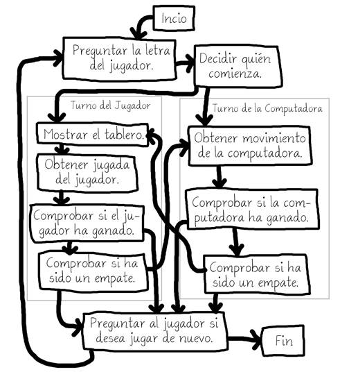
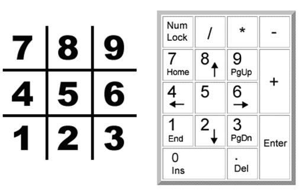
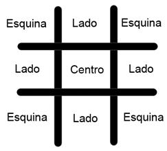
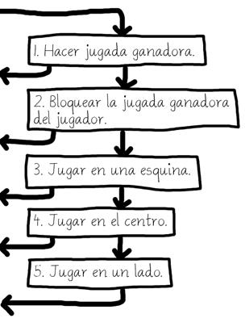
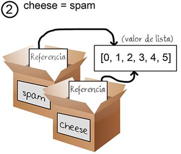
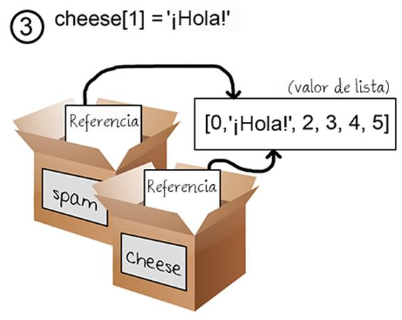
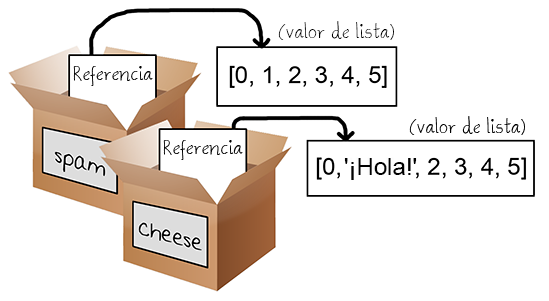

|
|
Capítulo 10 |
Ta Te Ti |

Temas Tratados En Este Capítulo:
· Inteligencia Artificial
· Referencias en Listas
· Evaluación en Cortocircuito
· El Valor None
Este capítulo presenta un juego de Ta Te Ti contra una inteligencia artificial simple. Una inteligencia artificial (IA) es un programa de computadora que puede responder inteligentemente a los movimientos del jugador. Este juego no introduce ningún nuevo concepto que sea complicado. La inteligencia artificial del juego de Ta Te Ti consiste en sólo unas pocas líneas de código.
Dos personas pueden jugar Ta Te Ti con lápiz y papel. Un jugador es X y el otro es O. En un tablero consistente en nueve cuadrados, los jugadores toman turnos para colocar sus X u O. Si un jugador consigue ubicar tres de sus marcas en el tablero sobre la misma línea, columna o alguna de las dos diagonales, gana. Cuando el tablero se llena y ningún jugador ha ganado, el juego termina en empate.
Este capítulo no introduce muchos nuevos conceptos de programación. Hace uso de nuestro conocimiento adquirido hasta ahora para crear un jugador inteligente de Ta Te Ti. Empecemos mirando una prueba de ejecución del programa. El jugador hace su movimiento escribiendo el número del espacio en el que quiere jugar. Estos números están dispuestos de igual forma que las teclas numéricas en tu teclado (ver Figura 10-2).
Prueba de Ejecución de Ta Te Ti
¡Bienvenido al Ta Te Ti!
¿Deseas ser X o O?
X
La computadora irá primero.
| |
O | |
| |
-----------
| |
| |
| |
-----------
| |
| |
| |
¿Cuál es tu próxima jugada? (1-9)
3
| |
O | |
| |
-----------
| |
| |
| |
-----------
| |
O | | X
| |
¿Cuál es tu próxima jugada? (1-9)
4
| |
O | | O
| |
-----------
| |
X | |
| |
-----------
| |
O | | X
| |
¿Cuál es tu próxima jugada? (1-9)
5
| |
O | O | O
| |
-----------
| |
X | X |
| |
-----------
| |
O | | X
| |
¡La computadora te ha vencido! Has perdido.
¿Deseas volver a jugar? (sí/no)?
no
Código Fuente del Ta Te Ti
En una nueva ventana del editor de archivos, escribe el siguiente código y guárdalo como tateti.py. Luego ejecuta el juego pulsando F5.
tateti.py
1. # Ta Te Ti
2.
3. import random
4.
5. def dibujarTablero(tablero):
6. # Esta función dibuja el tablero recibido como argumento.
7.
8. # "tablero" es una lista de 10 cadenas representando la pizarra (ignora índice 0)
9. print(' | |')
10. print(' ' + tablero[7] + ' | ' + tablero[8] + ' | ' + tablero[9])
11. print(' | |')
12. print('-----------')
13. print(' | |')
14. print(' ' + tablero[4] + ' | ' + tablero[5] + ' | ' + tablero[6])
15. print(' | |')
16. print('-----------')
17. print(' | |')
18. print(' ' + tablero[1] + ' | ' + tablero[2] + ' | ' + tablero[3])
19. print(' | |')
20.
21. def ingresaLetraJugador():
22. # Permite al jugador typear que letra desea ser.
23. # Devuelve una lista con las letras de los jugadores como primer item, y la de la computadora como segundo.
24. letra = ''
25. while not (letra == 'X' or letra == 'O'):
26. print('¿Deseas ser X o O?')
27. letra = input().upper()
28.
29. # el primer elemento de la lista es la letra del jugador, el segundo es la letra de la computadora.
30. if letra == 'X':
31. return ['X', 'O']
32. else:
33. return ['O', 'X']
34.
35. def quienComienza():
36. # Elije al azar que jugador comienza.
37. if random.randint(0, 1) == 0:
38. return 'La computadora'
39. else:
40. return 'El jugador'
41.
42. def jugarDeNuevo():
43. # Esta funcion devuelve True (Verdadero) si el jugador desea volver a jugar, de lo contrario devuelve False (Falso).
44. print('¿Deseas volver a jugar? (sí/no)?')
45. return input().lower().startswith('s')
46.
47. def hacerJugada(tablero, letra, jugada):
48. tablero[jugada] = letra
49.
50. def esGanador(ta, le):
51. # Dado un tablero y la letra de un jugador, devuelve True (verdadero) si el mismo ha ganado.
52. # Utilizamos reemplazamos tablero por ta y letra por le para no escribir tanto.
53. return ((ta[7] == le and ta[8] == le and ta[9] == le) or # horizontal superior
54. (ta[4] == le and ta[5] == le and ta[6] == le) or # horizontal medio
55. (ta[1] == le and ta[2] == le and ta[3] == le) or # horizontal inferior
56. (ta[7] == le and ta[4] == le and ta[1] == le) or # vertical izquierda
57. (ta[8] == le and ta[5] == le and ta[2] == le) or # vertical medio
58. (ta[9] == le and ta[6] == le and ta[3] == le) or # vertical derecha
59. (ta[7] == le and ta[5] == le and ta[3] == le) or # diagonal
60. (ta[9] == le and ta[5] == le and ta[1] == le)) # diagonal
61.
62. def obtenerDuplicadoTablero(tablero):
63. # Duplica la lista del tablero y devuelve el duplicado.
64. dupTablero = []
65.
66. for i in tablero:
67. dupTablero.append(i)
68.
69. return dupTablero
70.
71. def hayEspacioLibre(tablero, jugada):
72. # Devuelte true si hay espacio para efectuar la jugada en el tablero.
73. return tablero[jugada] == ' '
74.
75. def obtenerJugadaJugador(tablero):
76. # Permite al jugador escribir su jugada.
77. jugada = ' '
78. while jugada not in '1 2 3 4 5 6 7 8 9'.split() or not hayEspacioLibre(tablero, int(jugada)):
79. print('¿Cuál es tu próxima jugada? (1-9)')
80. jugada = input()
81. return int(jugada)
82.
83. def elegirAzarDeLista(tablero, listaJugada):
84. # Devuelve una jugada válida en el tablero de la lista recibida.
85. # Devuelve None si no hay ninguna jugada válida.
86. jugadasPosibles = []
87. for i in listaJugada:
88. if hayEspacioLibre(tablero, i):
89. jugadasPosibles.append(i)
90.
91. if len(jugadasPosibles) != 0:
92. return random.choice(jugadasPosibles)
93. else:
94. return None
95.
96. def obtenerJugadaComputadora(tablero, letraComputadora):
97. # Dado un tablero y la letra de la computadora, determina que jugada efectuar.
98. if letraComputadora == 'X':
99. letraJugador = 'O'
100. else:
101. letraJugador = 'X'
102.
103. # Aquí está nuestro algoritmo para nuestra IA (Inteligencia Artifical) del Ta Te Ti.
104. # Primero, verifica si podemos ganar en la próxima jugada
105. for i in range(1, 10):
106. copia = obtenerDuplicadoTablero(tablero)
107. if hayEspacioLibre(copia, i):
108. hacerJugada(copia, letraComputadora, i)
109. if esGanador(copia, letraComputadora):
110. return i
111.
112. # Verifica si el jugador podría ganar en su próxima jugada, y lo bloquea.
113. for i in range(1, 10):
114. copia = obtenerDuplicadoTablero(tablero)
115. if hayEspacioLibre(copia, i):
116. hacerJugada(copia, letraJugador, i)
117. if esGanador(copia, letraJugador):
118. return i
119.
120. # Intenta ocupar una de las esquinas de estar libre.
121. jugada = elegirAzarDeLista(tablero, [1, 3, 7, 9])
122. if jugada != None:
123. return jugada
124.
125. # De estar libre, intenta ocupar el centro.
126. if hayEspacioLibre(tablero, 5):
127. return 5
128.
129. # Ocupa alguno de los lados.
130. return elegirAzarDeLista(tablero, [2, 4, 6, 8])
131.
132. def tableroCompleto(tablero):
133. # Devuelve True si cada espacio del tablero fue ocupado, caso contrario devuele False.
134. for i in range(1, 10):
135. if hayEspacioLibre(tablero, i):
136. return False
137. return True
138.
139.
140. print('¡Bienvenido al Ta Te Ti!')
141.
142. while True:
143. # Resetea el tablero
144. elTablero = [' '] * 10
145. letraJugador, letraComputadora = ingresaLetraJugador()
146. turno = quienComienza()
147. print(turno + ' irá primero.')
148. juegoEnCurso = True
149.
150. while juegoEnCurso:
151. if turno == 'El jugador':
152. # Turno del jugador
153. dibujarTablero(elTablero)
154. jugada = obtenerJugadaJugador(elTablero)
155. hacerJugada(elTablero, letraJugador, jugada)
156.
157. if esGanador(elTablero, letraJugador):
158. dibujarTablero(elTablero)
159. print('¡Felicidades, has ganado!')
160. juegoEnCurso = False
161. else:
162. if tableroCompleto(elTablero):
163. dibujarTablero(elTablero)
164. print('¡Es un empate!')
165. break
166. else:
167. turno = 'La computadora'
168.
169. else:
170. # Turno de la computadora
171. jugada = obtenerJugadaComputadora(elTablero, letraComputadora)
172. hacerJugada(elTablero, letraComputadora, jugada)
173.
174. if esGanador(elTablero, letraComputadora):
175. dibujarTablero(elTablero)
176. print('¡La computadora te ha vencido! Has perdido.')
177. juegoEnCurso = False
178. else:
179. if tableroCompleto(elTablero):
180. dibujarTablero(elTablero)
181. print('¡Es un empate!')
182. break
183. else:
184. turno = 'El jugador'
185.
186. if not jugarDeNuevo():
187. break
Diseñando el Programa
La Figura 10-1 muestra cómo se vería un diagrama de flujo del Ta Te Ti. En nuestro programa del Ta Te Ti el jugador elige si quiere ser X u O. Quién toma el primer turno se elige al azar. Luego el jugador y la computadora toman turnos para jugar.
Los recuadros a la izquierda del diagrama de flujo son lo que ocurre durante el turno del jugador. El lado derecho muestra lo que ocurre durante el turno de la computadora. El jugador tiene un recuadro extra para dibujar el tablero ya que la computadora no precisa ver el tablero impreso en la pantalla. Luego de que el jugador o la computadora hacen su movimiento, revisamos si han ganado u ocasionado un empate, y entonces cambia el turno del juego. Después de que termina el juego, le preguntamos al jugador si desea jugar otra vez.

Figura 10-1: Diagrama de flujo para el Ta Te Ti

Figura 10-2: El tablero está ordenado igual que el teclado numérico de la computadora.
Representando el Tablero como Datos
Primero, necesitamos entender cómo vamos a representar el tablero como una variable. Sobre papel, el tablero de Ta Te Ti se dibuja como un par de líneas horizontales y un par de líneas verticales, con una X, una O o un espacio vacío en cada una de las nueve regiones formadas.
En el programa, el tablero de Ta Te Ti se representa como una lista de cadenas. Cada cadena representa uno de los nueve espacios en el tablero. Para que sea más fácil recordar qué índice de la lista corresponde a cada espacio, los ordenaremos igual que en el tablero numérico del teclado, como se muestra en la Figura 10-2.
Las cadenas serán 'X' para el jugador X, 'O' para el jugador O, o un espacio simple ' ' para un espacio vacío.
Entonces si una lista de diez cadenas se guardase en una variable llamada tablero, tablero[7] sería el espacio superior izquierdo en el tablero. De la misma forma tablero[5] sería el centro, tablero[4] sería el costado izquierdo, etcétera. El programa ignorará la cadena en el índice 0 de la lista. El jugador entrará un número de 1 a 9 para decirle al juego sobre qué espacio quiere jugar.
IA del Juego
La IA necesitará poder ver el tablero y decidir sobre qué tipo de espacios mover. Para ser claros, definiremos tres tipos de espacios en el tablero de Ta Te Ti: esquinas, lados y el centro. La Figura 10-3 presenta un esquema de qué es cada espacio.

Figura 10-3: Ubicación de los lados, esquinas y centro en el tablero.
La astucia de la IA para jugar al Ta Te Ti seguirá un algoritmo simple. Un algoritmo es una serie finita de instrucciones para computar un resultado. Un único programa puede hacer uso de varios algoritmos diferentes. Un algoritmo puede representarse con un diagrama de flujo. El algoritmo de la IA del Ta Te Ti computa la mejor movida disponible, como se muestra en la Figura 10-4.
El algoritmo de la IA consiste en los siguientes pasos:
1. Primero, ver si hay un movimiento con el que la computadora pueda ganar el juego. Si lo hay, hacer ese movimiento. En caso contrario, ir al paso 2.
2. Ver si existe un movimiento disponible para el jugador que pueda hacer que la computadora pierda el juego. Si existe, la computadora debería jugar en ese lugar para bloquear la jugada ganadora. En caso contrario, ir al paso 3.
3. Comprobar si alguna de las esquinas (espacios 1, 3, 7, ó 9) está disponible. Si lo está, mover allí. Si no hay ninguna esquina disponible, ir al paso 4.
4. Comprobar si el centro está libre. Si lo está, jugar en el centro. Si no lo está, ir al paso 5.
5. Jugar en cualquiera de los lados (espacios 2, 4, 6, u 8). No hay más pasos, ya que si hemos llegado al paso 5 los únicos espacios restantes son los lados.
Todo esto ocurre dentro del casillero “Obtener movimiento de la computadora.” en nuestro diagrama de flujo de la Figura 10-1. Podrías añadir esta información al diagrama de flujo con los recuadros de la Figura 10-4.

Figura 10-4: Los cinco pasos del algoritmo “Obtener movimiento de la computadora”. Las flechas salientes van al recuadro “Comprobar si la computadora ha ganado”.
Este algoritmo es implementado en la función obtenerJugadaComputadora() y las otras funciones llamadas por obtenerJugadaComputadora().
El Comienzo del Programa
1. # Ta Te Ti
2.
3. import random
El primer par de líneas son un comentario y la importación del módulo random para poder llamar a la función randint().
Dibujando el Tablero en la Pantalla
5. def dibujarTablero(tablero):
6. # Esta función dibuja el tablero recibido como argumento.
7.
8. # "tablero" es una lista de 10 cadenas representando la pizarra (ignora índice 0)
9. print(' | |')
10. print(' ' + tablero[7] + ' | ' + tablero[8] + ' | ' + tablero[9])
11. print(' | |')
12. print('-----------')
13. print(' | |')
14. print(' ' + tablero[4] + ' | ' + tablero[5] + ' | ' + tablero[6])
15. print(' | |')
16. print('-----------')
17. print(' | |')
18. print(' ' + tablero[1] + ' | ' + tablero[2] + ' | ' + tablero[3])
19. print(' | |')
La función dibujarTablero() imprimirá el tablero de juego representado por el parámetro tablero. Recuerda que nuestro tablero se representa como una lista de diez cadenas, donde la cadena correspondiente al índice 1 es la marca en el espacio 1 sobre el tablero del Ta Te Ti. La cadena en el índice 0 es ignorada. Muchas de nuestras funciones operarán pasando una lista de diez cadenas a modo de tablero.
Asegúrate de escribir correctamente los espacios en las cadenas, ya que de otra forma el tablero se verá raro al imprimirse en pantalla. Aquí hay algunas llamadas de ejemplo (con un argumento como tablero) a dibujarTablero() junto con las correspondientes salidas de la función:
>>> dibujarTablero([' ', ' ', ' ', ' ', 'X', 'O', ' ', 'X', ' ', 'O']
| |
X | | O
| |
-----------
| |
X | O |
| |
-----------
| |
| |
| |
>>> [' ', 'O', 'O', ' ', ' ', 'X', ' ', ' ', ' ', ' ']
| |
| |
| |
-----------
| |
| X |
| |
-----------
| |
O | O |
| |
>>> [' ', ' ', ' ', ' ', ' ', ' ', ' ', ' ', ' ', ' ']
| |
| |
| |
-----------
| |
| |
| |
-----------
| |
| |
| |
Dejando al Jugador elegir X u O
21. def ingresaLetraJugador():
22. # Permite al jugador typear que letra desea ser.
23. # Devuelve una lista con las letras de los jugadores como primer item, y la de la computadora como segundo.
24. letra = ''
25. while not (letra == 'X' or letra == 'O'):
26. print('¿Deseas ser X o O?')
27. letra = input().upper()
La función ingresaLetraJugador() pregunta al jugador si desea ser X u O. Continuará preguntando al jugador hasta que este escriba X u O. La línea 27 cambia automáticamente la cadena devuelta por la llamada a input() a letras mayúsculas con el método de cadena upper().
La condición del bucle while contiene paréntesis, lo que significa que la expresión dentro del paréntesis es evaluada primero. Si se asignara 'X' a la variable letra, la expresión se evaluaría de esta forma:
not (letra == 'X' or letra == 'O')
▼
not ('X' == 'X' or 'X' == 'O')
▼
not ( True or False)
▼
not (True)
▼
not True
▼
False
Si letra tiene valor 'X' o 'O', entonces la condición del bucle es False y permite que la ejecución del programa continúe luego del bloque while.
29. # el primer elemento de la lista es la letra del jugador, el segundo es la letra de la computadora.
30. if letra == 'X':
31. return ['X', 'O']
32. else:
33. return ['O', 'X']
Esta función devuelve una lista con dos elementos. El primer elemento (la cadena del índice 0) será la letra del jugador, y el segundo elemento (la cadena del índice 1) será la letra de la computadora. Estas sentencias if-else elige la lista adecuada a devolver.
Decidiendo Quién Comienza
35. def quienComienza():
36. # Elije al azar que jugador comienza.
37. if random.randint(0, 1) == 0:
38. return 'La computadora'
39. else:
40. return 'El jugador'
La función quienComienza() lanza una moneda virtual para determinar quien comienza entre la computadora y el jugador. El lanzamiento virtual de moneda se realiza llamando a random.randint(0, 1). Si esta llamada a función devuelve 0, la función quienComienza() devuelve la cadena 'La computadora'. De lo contrario, la función devuelve la cadena 'El jugador'. El código que llama a esta función usará el valor de retorno para saber quién hará la primera movida del juego.
Preguntando al Jugador si desea Jugar de Nuevo
42. def jugarDeNuevo():
43. # Esta funcion devuelve True (Verdadero) si el jugador desea volver a jugar, de lo contrario devuelve False (Falso).
44. print('¿Deseas volver a jugar? (sí/no)?')
45. return input().lower().startswith('s')
La función jugarDeNuevo() pregunta al jugador si desea jugar de nuevo. Esta función devuelve True si el jugador escribe 'sí' or 'SÍ' or 's' o cualquier cosa que comience con la letra S. Con cualquier otra respuesta, la función devuelve False. Esta función es igual a la utilizada en el juego del Ahorcado.
Colocando una Marca en el Tablero
47. def hacerJugada(tablero, letra, jugada):
48. tablero[jugada] = letra
La función hacerJugada() es simple y consiste en sólo una línea. Los parámetros son una lista con diez cadenas llamada tablero, la letra de uno de los jugadores ('X' u 'O') llamada letra, y un espacio en el tablero donde ese jugador quiere jugar (el cual es un entero de 1 a 9) llamado jugada.
Pero espera un segundo. Este código parece cambiar uno de los elementos de la lista tablero por el valor en letra. Pero como este código pertenece a una función, el parámetro tablero será olvidado al salir de esta función y abandonar el entorno de la función. El cambio a tablero también será olvidado.
En realidad, esto no es lo que ocurre. Esto se debe a que las listas se comportan en forma especial cuando las pasas como argumentos a funciones. En realidad estás pasando una referencia a la lista y no la propia lista. Vamos a aprender ahora sobre la diferencia entre las listas y las referencias a listas.
Referencias
Prueba ingresar lo siguiente en la consola interactiva:
>>> spam = 42
>>> cheese = spam
>>> spam = 100
>>> spam
100
>>> cheese
42
Esto tiene sentido a partir de lo que sabes hasta ahora. Asignas 42 a la variable spam, y luego copias el valor en spam y lo asignas a la variable cheese. Cuando luego cambias spam a 100, esto no afecta al valor en cheese. Esto es porque spam y cheese son variables diferentes que almacenan valores diferentes
Pero las listas no funcionan así. Cuando asignas una lista a una variable usando el signo =, en realidad asignas a la variable una referencia a esa lista. Una referencia es un valor que apunta a un dato. Aquí hay un ejemplo de código que hará que esto sea más fácil de entender. Escribe esto en la consola interactiva:
>>> spam = [0, 1, 2, 3, 4, 5]
>>> cheese = spam
>>> cheese[1] = '¡Hola!'
>>> spam
[0, '¡Hola!', 2, 3, 4, 5]
>>> cheese
[0, '¡Hola!', 2, 3, 4, 5]
Esto se ve raro. El código sólo modificó la lista cheese, pero parece que tanto la lista cheese como la lista spam han cambiado. Esto se debe a que la variable spam no contiene a la propia lista sino una referencia a la misma, como se muestra en la Figura 10-5. La lista en sí misma no está contenida en ninguna variable, sino que existe por fuera de ellas.

Figura 10-5: Las variables no guardan listas, sino referencias a listas.
Observa que cheese = spam copia la referencia a lista en spam a cheese, en lugar de copiar el propio valor de lista. Tanto spam como cheese guardan una referencia que apunta al mismo valor de lista. Pero sólo hay una lista. No se ha copiado la lista, sino una referencia a la misma. La Figura 10-6 ilustra esta copia.

Figura 10-6: Dos variables guardan dos referencias a la misma lista.
Entonces la línea cheese[1] = '¡Hola!' cambia la misma lista a la que se refiere spam. Es por esto que spam parece tener el mismo valor de lista que cheese. Ambas tienen referencias que apuntan a la misma lista, como se ve en la Figura 10-7.

Figura 10-7: Cambio de la lista cambia todas las variables con referencias a la lista.
Si quieres que spam y cheese guarden dos listas diferentes, tienes que crear dos listas diferentes en lugar de copiar una referencia:
>>> spam = [0, 1, 2, 3, 4, 5]
>>> cheese = [0, 1, 2, 3, 4, 5]
En el ejemplo anterior, spam y cheese almacenan dos listas diferentes (aunque el contenido de ambas sea idéntico). Pero si modificas una de las listas, esto no afectará a la otra porque las variables spam y cheese tienen referencias a dos listas diferentes:
>>> spam = [0, 1, 2, 3, 4, 5]
>>> cheese = [0, 1, 2, 3, 4, 5]
>>> cheese[1] = 'Hello!'
>>> spam
[0, 1, 2, 3, 4, 5]
>>> cheese
[0, 'Hello!', 2, 3, 4, 5]
La Figura 10-8 muestra como las dos referencias apuntan a dos listas diferentes.

Figura 10-8: Dos variables con referencias a dos listas diferentes.
Los diccionarios funcionan de la misma forma. Las variables no almacenan diccionarios, sino que almacenan referencias a diccionarios.
Usando Referencias a Listas en hacerJugada()
Volvamos a la función hacerJugada():
47. def hacerJugada(tablero, letra, jugada):
48. tablero[jugada] = letra
Cuando un valor de lista se pasa por el parámetro tablero, la variable local de la función es en realidad una copia de la referencia a la lista, no una copia de la lista. Pero una copia de la referencia sigue apuntando a la misma lista a la que apunta la referencia original. Entonces cualquier cambio a tablero en esta función ocurrirá también en la lista original. Así es cómo la función hacerJugada() modifica la lista original.
Los parámetros letra y jugada son copias de los valores cadena y entero que pasamos. Como son copias de valores, si modificamos letra o jugada en esta función, las variables originales que usamos al llamar a hacerJugada() no registrarán cambios.
Comprobando si el Jugador Ha Ganado
50. def esGanador(ta, le):
51. # Dado un tablero y la letra de un jugador, devuelve True (verdadero) si el mismo ha ganado.
52. # Utilizamos reemplazamos tablero por ta y letra por le para no escribir tanto.
53. return ((ta[7] == le and ta[8] == le and ta[9] == le) or # horizontal superior
54. (ta[4] == le and ta[5] == le and ta[6] == le) or # horizontal medio
55. (ta[1] == le and ta[2] == le and ta[3] == le) or # horizontal inferior
56. (ta[7] == le and ta[4] == le and ta[1] == le) or # vertical izquierda
57. (ta[8] == le and ta[5] == le and ta[2] == le) or # vertical medio
58. (ta[9] == le and ta[6] == le and ta[3] == le) or # vertical derecha
59. (ta[7] == le and ta[5] == le and ta[3] == le) or # diagonal
60. (ta[9] == le and ta[5] == le and ta[1] == le)) # diagonal
Las líneas 53 a 60 en la función esGanador() son el realidad una larga sentencia return. Los nombres ta y le son abreviaturas de los parámetros tablero y letra para no tener que escribir tanto en esta función. Recuerda, a Python no le importa qué nombres uses para tus variables.
Hay ocho posibles formas de ganar al Ta Te Ti. Puedes formar una línea horizontal arriba, al medio o abajo. O puedes formar una línea vertical a la izquierda, al medio o a la derecha. O puedes formar cualquiera de las dos diagonales.
Fíjate que cada línea de la condición comprueba si los tres espacios son iguales a la letra pasada (combinados con el operador and) y usamos el operador or para combinar las ocho diferentes formas de ganar. Esto significa que sólo una de las ocho formas necesita ser verdadera para que podamos afirmar que el jugador a quien pertenece la letra en le es el ganador.
Supongamos que le es 'O', y el tablero se ve así:
| |
X | |
| |
-----------
| |
| X |
| |
-----------
| |
O | O | O
| |
Así es como se evaluaría la expresión luego de la palabra reservada return en la línea 53:
53. return ((ta[7] == le and ta[8] == le and ta[9] == le) or # horizontal superior
54. (ta[4] == le and ta[5] == le and ta[6] == le) or # horizontal medio
55. (ta[1] == le and ta[2] == le and ta[3] == le) or # horizontal inferior
56. (ta[7] == le and ta[4] == le and ta[1] == le) or # vertical izquierda
57. (ta[8] == le and ta[5] == le and ta[2] == le) or # vertical medio
58. (ta[9] == le and ta[6] == le and ta[3] == le) or # vertical derecha
59. (ta[7] == le and ta[5] == le and ta[3] == le) or # diagonal
60. (ta[9] == le and ta[5] == le and ta[1] == le)) # diagonal
Primero Python reemplazará las variables ta y le por los valores que contienen::
return (('X' == 'O' and ' ' == 'O' and ' ' == 'O') or
(' ' == 'O' and 'X' == 'O' and ' ' == 'O') or
('O' == 'O' and 'O' == 'O' and 'O' == 'O') or
('X' == 'O' and ' ' == 'O' and 'O' == 'O') or
(' ' == 'O' and 'X' == 'O' and 'O' == 'O') or
(' ' == 'O' and ' ' == 'O' and 'O' == 'O') or
('X' == 'O' and 'X' == 'O' and 'O' == 'O') or
(' ' == 'O' and 'X' == 'O' and 'O' == 'O'))
A continuación, Python evaluará todas las comparaciones == dentro de los paréntesis a un valor Booleano:
return ((False and False and False) or
(False and False and False) or
(True and True and True) or
(False and False and True) or
(False and False and True) or
(False and False and True) or
(False and False and True) or
(False and False and True))
Luego el intérprete Python evaluará todas estas expresiones dentro de los paréntesis:
return ((False) or
(False) or
(True) or
(False) or
(False) or
(False) or
(False) or
(False))
Como ahora hay sólo un valor dentro del paréntesis, podemos eliminarlos:
return (False or
False or
True or
False or
False or
False or
False or
False)
Ahora evaluamos la expresión conectada por todos los operadores or:
return (True)
Una vez más, eliminamos los paréntesis y nos quedamos con un solo valor:
return True
Entonces dados estos valores para ta y le, la expresión se evaluaría a True. Así es cómo el programa puede decir si uno de los jugadores ha ganado el juego.
Duplicando los Datos del Tablero
62. def obtenerDuplicadoTablero(tablero):
63. # Duplica la lista del tablero y devuelve el duplicado.
64. dupTablero = []
65.
66. for i in tablero:
67. dupTablero.append(i)
68.
69. return dupTablero
La función obtenerDuplicadoTablero() está aquí para que podamos fácilmente hacer una copia de una dada lista de 10 cadenas que representa un tablero de Ta Te Ti en nuestro juego. Algunas veces querremos que nuestro algoritmo IA haga modificaciones temporarias a una copia provisoria del tablero sin cambiar el tablero original. En ese caso, llamaremos a esta función para hacer una copia de la lista del tablero. La nueva lista se crea en la línea 64, con los corchetes [] de lista vacía.
Pero la lista almacenada en dupTablero en la línea 64 es sólo una lista vacía. El bucle for recorre el parámetro tablero, agregando una copia de los valores de cadena en el tablero original al tablero duplicado. Finalmente, después del bucle, se devuelve dupTablero. La función obtenerDuplicadoTablero() construye una copia del tablero original y devuelve una referencia a este nuevo tablero, y no al original.
Comprobando si un Espacio en el Tablero está Libre
71. def hayEspacioLibre(tablero, jugada):
72. # Devuelte true si hay espacio para efectuar la jugada en el tablero.
73. return tablero[jugada] == ' '
Esta es una función simple que, dado un tablero de Ta Te Ti y una posible jugada, confirmará si esa jugada está disponible o no. Recuerda que los espacios libres en la lista tablero se indican como una cadena con un espacio simple. Si el elemento en el índice del espacio indicado no es igual a una cadena con un espacio simple, el espacio está ocupado y no es una jugada válida.
Permitiendo al Jugador Ingresar Su Jugada
75. def obtenerJugadaJugador(tablero):
76. # Permite al jugador escribir su jugada.
77. jugada = ' '
78. while jugada not in '1 2 3 4 5 6 7 8 9'.split() or not hayEspacioLibre(tablero, int(jugada)):
79. print('¿Cuál es tu próxima jugada? (1-9)')
80. jugada = input()
81. return int(jugada)
La función obtenerJugadaJugador() pide al jugador que ingrese el número del espacio en el que desea jugar. El bucle se asegura de que la ejecución no prosiga hasta que el jugador haya ingresado un entero de 1 a 9. También comprueba que el espacio no esté ocupado, dado el tablero de Ta Te Ti pasado a la función en el parámetro tablero.
Las dos líneas de código dentro del bucle while simplemente piden al jugador que ingrese un número de 1 a 9. La condición de la línea 78 es True si cualquiera de las expresiones a la izquierda o a la derecha del operador or es True.
La expresión en el lado izquierdo comprueba si la jugada ingresada por el jugador es igual a '1', '2', '3', y así hasta '9' mediante la creación de una lista con estas cadenas (usando el método split()) y comprobando si la jugada está en esta lista.
'1 2 3 4 5 6 7 8 9'.split() se evalúa a la lista ['1', '2', '3', '4', '5', '6', '7', '8', '9'], pero es más fácil de escribir.
La expresión sobre el lado derecho comprueba si la jugada que el jugador ingresó es un espacio libre en el tablero. Lo comprueba llamando a la función hayEspacioLibre(). Recuerda que hayEspacioLibre() devolverá True si la jugada que le hemos pasado está disponible en el tablero. Nota que hayEspacioLibre() espera un entero en el parámetro jugada, así que empleamos la función int() para evaluar la forma entera de jugada.
Los operadores not se agregan a ambos lados de modo que la condición será True cuando cualquiera de estos requerimientos deje de cumplirse. Esto hará que el bucle pida al jugador una nueva jugada una y otra vez hasta que la jugada ingresada sea válida.
Finalmente, en la línea 81, se devuelve la forma entera de la jugada ingresada por el jugador. Recuerda que input() devuelve una cadena, así que la función int() es llamada para devolver la forma entera de la cadena.
Evaluación en Cortocircuito
Puede ser que hayas notado un posible problema problema en nuestra función obtenerJugadaJugador(). ¿Qué pasaría si el jugador ingresara 'Z' o alguna otra cadena no entera? La expresión jugada not in '1 2 3 4 5 6 7 8 9'.split() sobre el lado izquierdo devolvería False de acuerdo con lo esperado, y entonces evaluaríamos la expresión sobre el lado derecho del operador or.
Pero llamar a int('Z') ocasionaría un error. Python muestra este error porque la función int() sólo puede tomar cadenas o caracteres numéricos, tales como '9' o '0', no cadenas como 'Z'.
Como un ejemplo de este tipo de error, prueba ingresar esto en la consola interactiva:
>>> int('42')
42
>>> int('Z')
Traceback (most recent call last):
File "<pyshell#3>", line 1, in <module>
int('Z')
ValueError: invalid literal for int() with base 10: 'Z'
Pero cuando juegas al Ta Te Ti e intentas ingresar 'Z' en tu jugada, este error no ocurre. La razón de esto es que la condición del bucle while está siendo cortocircuitada.
Evaluar en cortocircuito quiere decur que como el lado izquierdo de la palabra reservada or (jugada not in '1 2 3 4 5 6 7 8 9'.split()) se evalúa a True, el intérprete Python saba que la expresión completa será evaluada a True. No importa si la expresión sobre el lado derecho de la palabra reservada or se evalúa a True o False, porque sólo uno de los valores junto al operador or precisa ser True.
Piensa en esto: La expresión True or False se evalúa a True y la expresión True or True también se evalúa a True. Si el valor sobre el lado izquierdo es True, no importa qué valor esté sobre el lado derecho:
False and <<<cualquier cosa>>> siempre se evalúa a False
True or <<<cualquier cosa>>> siempre se evalúa a True
Entonces Python no comprueba el resto de la expresión y ni siquiera se molesta en evaluar la parte not hayEspacioLibre(tablero, int(jugada)). Esto significa las funciones int() y hayEspacioLibre() nunca son llamadas mientras jugada not in '1 2 3 4 5 6 7 8 9'.split() sea True.
Esto funciona bien para el programa, pues si la expresión del lado izquierda es True entonces jugada no es una cadena en forma de número. Esto hace que int() devuelva un error. Las únicas veces que jugada not in '1 2 3 4 5 6 7 8 9'.split() se evalúa a False son cuando jugada no es una cadena compuesta por un único dígito. En ese caso, la llamada a int() no nos daría un error.
Un Ejemplo de Evaluación en Cortocircuito
Aquí hay un pequeño programa que sirve como un buen ejemplo de evaluación en cortocircuito. Prueba escribir lo siguiente en la consola interactiva:
>>> def DevuelveTrue():
print('DevuelveTrue() ha sido llamada.')
return True
>>> def DevuelveFalse():
print('DevuelveFalse() ha sido llamada.')
return False
>>> DevuelveTrue()
DevuelveTrue() ha sido llamada.
True
>>> DevuelveFalse()
DevuelveFalse() ha sido llamada.
False
Cuando DevuelveTrue() es llamada, IDLE imprime 'DevuelveTrue() ha sido llamada.' y también muestra el valor retornado por DevuelveTrue(). Lo mismo ocurre con DevuelveFalse().
Ahora prueba escribir lo siguiente en la consola interactiva.
>>> DevuelveFalse() or DevuelveTrue()
DevuelveFalse() ha sido llamada.
DevuelveTrue() ha sido llamada.
True
>>> DevuelveTrue() or DevuelveFalse()
DevuelveTrue() ha sido llamada.
True
La primera parte parece razonable: La expresión DevuelveFalse() or DevuelveTrue() llama a ambas funciones, por lo que puedes ver ambos mensajes impresos.
Pero la segunda expresión sólo muestra 'DevuelveTrue() ha sido llamada.' y no 'DevuelveFalse() ha sido llamada.'. Esto se debe a que Python no ha llamado a DevuelveFalse(). Como el lado izquierdo del operador or es True, el resultado de DevuelveFalse() es irrelevante por lo que Python no se molesta en llamarla. La evaluación ha sido cortocircuitada.
Lo mismo ocurre con el operador and. Prueba escribir lo siguiente en la consola interactiva:
>>> DevuelveTrue() and DevuelveTrue()
DevuelveTrue() ha sido llamada.
DevuelveTrue() ha sido llamada.
True
>>> DevuelveFalse() and DevuelveFalse()
DevuelveFalse() ha sido llamada.
False
Si el lado izquierdo del operador and es False, entonces la expresión completa será False. No importa lo que sea el lado derecho del operador and, de modo que Python no se molesta en evaluarlo. Tanto False and True como False and False se evalúan a False, por lo que Python cortocircuita la evaluación.
Eligiendo una Jugada de una Lista de Jugadas
83. def elegirAzarDeLista(tablero, listaJugada):
84. # Devuelve una jugada válida en el tablero de la lista recibida.
85. # Devuelve None si no hay ninguna jugada válida.
86. jugadasPosibles = []
87. for i in listaJugada:
88. if hayEspacioLibre(tablero, i):
89. jugadasPosibles.append(i)
La función elegirAzarDeLista() es útil para el código IA más adelante en el programa. El parámetro tablero es una lista de cadenas que representa un tablero de Ta Te Ti. El segundo parámetro listaJugada es una lista de enteros con posibles espacios entre los cuales se puede elegir. Por ejemplo, si listaJugada is [1, 3, 7, 9], eso significa que elegirAzarDeLista() debería devolver el entero correspondiente a una de las esquinas.
Sin embargo, elegirAzarDeLista() comprobará primero que es válido realizar una jugada en ese espacio. La lista jugadasPosibles comienza siendo una lista vacía. El bucle for itera sobre listaJugada. Las jugadas para las cuales hayEspacioLibre() devuelve True se agregan a jugadasPosibles usando el método append().
91. if len(jugadasPosibles) != 0:
92. return random.choice(jugadasPosibles)
93. else:
94. return None
En este punto, la lista jugadasPosibles contiene todas las jugadas que estaban en listaJugada y también son espacios libres en la lista tablero. Si la lista no está vacía, hay al menos una jugada posible.
La lista podría estar vacía. Por ejemplo, si listaJugada fuera [1, 3, 7, 9] pero todas las esquinas del tablero estuviesen tomadas, la lista jugadasPosibles sería []. En ese caso, len(jugadasPosibles) se evaluaría a 0 y la función devolvería el valor None. La próxima sección explica el valor None.
El Valor None
El valor None representa la ausencia de un valor. None es el único valor del tipo de datos NoneType. Puede ser útil emplear el valor None cuando necesites un valor que exprese “no existe” o “ninguno de los anteriores”.
Pongamos por caso que tienes una variable llamada respuestaExámen para guardar la respuesta a una pregunta de selección múltiple. La variable podría contener True o False para indicar la respuesta del usuario. Podrías asignar None a respuestaExámen si el usuario saltease la pregunta sin responderla. Usar None es una forma clara de indicar que el usuario no ha respondido la pregunta.
Las funciones que retornan llegando al final de la función (es decir, sin alcanzar una sentencia return) devolverán None. El valor None se escribe sin comillas, con una “N” mayúscula y las letras “one” en minúsculas.
Como una nota al margen, None no se muestra en la consola interactiva como ocurriría con otros valores:
>>> 2 + 2
4
>>> 'Esto es una cadena.'
'Esto es una cadena.'
>>> None
Las funciones que aparentan no devolver nada en realidad devuelven el valor None. Por ejemplo, print() devuelve None:
>>> spam = print('¡Hola mundo!')
¡Hola mundo!
>>> spam == None
True
Creando la Inteligencia Artificial de la Computadora
96. def obtenerJugadaComputadora(tablero, letraComputadora):
97. # Dado un tablero y la letra de la computadora, determina que jugada efectuar.
98. if letraComputadora == 'X':
99. letraJugador = 'O'
100. else:
101. letraJugador = 'X'
La función obtenerJugadaComputadora() contiene al código de la IA. El primer argumento es un tablero de Ta Te Ti en el parámetro tablero. El segundo es la letra correspondiente a la computadora, sea 'X' u 'O' en el parámetro letraComputadora. Las primeras líneas simplemente asignan la otra letra a una variable llamada letraJugador. De esta forma el mismo código puede usarse independientemente de si la computadora es X u O.
La función devuelve un entero de 1 a 9 que representa el espacio en el que la computadora hará su jugada.
Recuerda cómo funciona el algoritmo del Ta Te Ti:
· Primero, ver si hay una jugada con que la computadora pueda ganar el juego. Si la hay, hacer esa jugada. En caso contrario, continuar al segundo paso.
· Segundo, ver si hay una jugada con la que el jugador pueda vencer a la computadora. Si la hay, la computadora debería jugar en ese lugar para bloquear al jugador. En caso contrario, continuar al tercer paso.
· Tercero, comprobar si alguna de las esquinas (espacios 1, 3, 7, o 9) está disponible. Si ninguna esquina está disponible, continuar al cuarto paso.
· Cuarto, comprobar si el centro está libre. Si lo está, jugar allí. En caso contrario, continuar al quinto paso.
· Quinto, jugar sobre cualquiera de los lados (espacios 2, 4, 6 u 8). No hay más pasos, pues si hemos llegado al quinto paso significa que sólo quedan los espacios sobre los lados.
La Computadora Comprueba si puede Ganar en Una Jugada
103. # Aquí está nuestro algoritmo para nuestra IA (Inteligencia Artifical) del Ta Te Ti.
104. # Primero, verifica si podemos ganar en la próxima jugada
105. for i in range(1, 10):
106. copia = obtenerDuplicadoTablero(tablero)
107. if hayEspacioLibre(copia, i):
108. hacerJugada(copia, letraComputadora, i)
109. if esGanador(copia, letraComputadora):
110. return i
Antes que nada, si la computadora puede ganar en la siguiente jugada, debería hacer la jugada ganadora inmediatamente. El bucle for que empieza en la línea 105 itera sobre cada posible jugada de 1 a 9. El código dentro del bucle simula lo que ocurriría si la computadora hiciera esa jugada.
La primera línea en el bucle (línea 106) crea una copia de la lista tablero. Esto es para que la jugada simulada dentro del bucle no modifique el tablero real de Ta Te Ti guardado en la variable tablero. La función obtenerDuplicadoTablero() devuelve una copia idéntica pero independiente del tablero.
La línea 107 comprueba si el espacio está libre y, si es así, simula hacer la jugada en la copia del tablero. Si esta jugada resulta en una victoria para la computadora, la la función devuelve el entero correspondiente a esa jugada.
Si ninguna de las jugadas posibles resulta en una victoria, el bucle concluye y la ejecución del programa continúa en la línea 113.
La Computadora Comprueba si el Jugador puede Ganar en Una Jugada
112. # Verifica si el jugador podría ganar en su próxima jugada, y lo bloquea.
113. for i in range(1, 10):
114. copia = obtenerDuplicadoTablero(tablero)
115. if hayEspacioLibre(copia, i):
116. hacerJugada(copia, letraJugador, i)
117. if esGanador(copia, letraJugador):
118. return i
A continuación, el código simula un movimiento del jugador en cada uno de los espacios. Este código es similar al bucle anterior, excepto que es la letra del jugador que se coloca sobre la copia del tablero. Si la función esGanador() muestra que el jugador ganaría con este movimiento, la computadora devuelve esta jugada para bloquear la victoria del jugador.
Si el jugador humano no puede ganar en la siguiente movida, el bucle for eventualmente concluye y la ejecución del programa continúa en la línea 121.
Comprobando las Esquinas, Centro y Espacios sobre los Lados (en ese Orden)
120. # Intenta ocupar una de las esquinas de estar libre.
121. jugada = elegirAzarDeLista(tablero, [1, 3, 7, 9])
122. if jugada != None:
123. return jugada
La llamada a elegirAzarDeLista() con la lista [1, 3, 7, 9] asegura que la función devuelva el entero de una de de las esquinas: 1, 3, 7, ó 9. Si todas las esquinas están tomadas, la función elegirAzarDeLista() devuelve None y la ejecución continúa en la línea 126.
125. # De estar libre, intenta ocupar el centro.
126. if hayEspacioLibre(tablero, 5):
127. return 5
Si ninguna de las esquinas está disponible, la línea 127 intentará jugar en el centro. Si el centro no está libre, la ejecución continúa sobre la línea 130.
129. # Ocupa alguno de los lados.
130. return elegirAzarDeLista(tablero, [2, 4, 6, 8])
Este código también llama a elegirAzarDeLista(), sólo que le pasamos una lista con los espacios sobre los lados ([2, 4, 6, 8]). Esta función no devolverá None pues los espacios sobre los lados son los únicos que pueden estar disponibles. Esto concluye la función obtenerJugadaComputadora() y el algoritmo IA.
Comprobando si el Tablero está Lleno
132. def tableroCompleto(tablero):
133. # Devuelve True si cada espacio del tablero fue ocupado, caso contrario devuele False.
134. for i in range(1, 10):
135. if hayEspacioLibre(tablero, i):
136. return False
137. return True
La última función es tableroCompleto(). Esta función devuelve True si la lista tablero pasada como argumento tiene una 'X' o una 'O' en cada índice (excepto por el índice 0, que es ignorado por el código). Si hay al menos un casillero en el tablero con espacio simple ' ' asignado, esta función devolverá False.
El bucle for nos permite comprobar los espacios 1 a 9 en el tablero de Ta Te Ti. Apenas encuentra un espacio libre en el tablero (es decir, cuando hayEspacioLibre(tablero, i) devuelve True) la función tableroCompleto() devuelve False.
Si la ejecución concluye todas las operaciones del bucle, significa que ninguno de los espacios está libre. Entonces se ejecutará la línea 137 y devolverá True.
El Inicio del Juego
140. print('¡Bienvenido al Ta Te Ti!')
La línea 140 es la primera línea que no está dentro de una función, de modo que es la primera línea de código que se ejecuta al entrar a este programa. Consiste en el saludo al jugador.
142. while True:
143. # Resetea el tablero
144. elTablero = [' '] * 10
Este bucle while tiene al valor True por condición, y continuará iterando hasta que la ejecución llegue a una sentencia break. La línea 144 configura el tablero principal de Ta Te Ti que usaremos, al cual llamaremos elTablero. Es una lista de 10 cadenas, donde cada una de ellas es un espacio simple ' '.
En lugar de escribir esta lista completa, la línea 44 usa replicación de listas. Es más corto y claro escribir [' '] * 10 que escribir [' ', ' ', ' ', ' ', ' ', ' ', ' ', ' ', ' ', ' '].
Decidiendo la Letra del Jugador y Quién Comienza
145. letraJugador, letraComputadora = ingresaLetraJugador()
La función ingresaLetraJugador() permite al jugador elegir si quiere ser X u O. La función devuelve una lista de dos cadenas, la cual puede ser ['X', 'O'] o ['O', 'X']. El truco de asignación múltiple asignará letraJugador al primer elemento en la lista devuelta y letraComputadora al segundo.
146. turno = quienComienza()
147. print(turno + ' irá primero.')
148. juegoEnCurso = True
La función quienComienza() decide aleatoriamente quién comienza, y devuelve la cadena 'El jugador' o bien 'La computadora' y la línea 147 comunica al jugador quién comenzará.
Ejecutando el Turno del Jugador
150. while juegoEnCurso:
El bucle de la línea 150 continuará alternando entre el código del turno del jugador y el del turno de la computadora, mientras la juegoEnCurso tenga asignado el valor True.
151. if turno == 'El jugador':
152. # Turno del jugador
153. dibujarTablero(elTablero)
154. jugada = obtenerJugadaJugador(elTablero)
155. hacerJugada(elTablero, letraJugador, jugada)
El valor en la variable turno es originalmente asignado por llamada a la función quienComienza() en la línea 146. Su valor original es 'El jugador' o 'La computadora'. Si turno es igual a 'La computadora', la condición es False y la ejecución salta a la línea 169.
Primero, la línea 153 llama a la función dibujarTablero() pasándole la variable elTablero para dibujar el tablero en la pantalla. Entonces la función obtenerJugadaJugador() permite al jugador ingresar su jugada (y también comprueba que sea una movida válida). La función hacerJugada() actualiza elTablero para reflejar esta jugada.
157. if esGanador(elTablero, letraJugador):
158. dibujarTablero(elTablero)
159. print('¡Felicidades, has ganado!')
160. juegoEnCurso = False
Luego de que el jugador ha jugado, la computadora debería comprobar si ha ganado el juego. Si la función esGanador() devuelve True, el código del bloque if muestra el tablero ganador e imprime un mensaje comunicando al jugador que ha ganado.
Se asigna el valor False a la variable juegoEnCurso de modo que la ejecución no continúe con el turno de la computadora.
161. else:
162. if tableroCompleto(elTablero):
163. dibujarTablero(elTablero)
164. print('¡Es un empate!')
165. break
Si el jugador no ganó con esta última jugada, tal vez esta movida ha llenado el tablero y ocasionado un empate. En este bloque else, la función tableroCompleto() devuelve True si no hay más movimientos disponibles. En ese caso, el bloque if que comienza en la línea 162 muestra el tablero empatado y comunica al jugador que ha habido un empate. La ejecución sale entonces del bucle while y salta a la línea 186.
166. else:
167. turno = 'La computadora'
Si el jugador no ha ganado u ocasionado un empate, la línea 167 asigna 'La computadora' a la variable turno, de modo que ejecute el código para el turno de la computadora en la siguiente iteración.
Ejecutando el Turno de la Computadora
Si la variable turno no es 'El Jugador' para la condición en la línea 151, entonces es el turno de la computadora. El código en este bloque else es similar al código para el turno del jugador.
169. else:
170. # Turno de la computadora
171. jugada = obtenerJugadaComputadora(elTablero, letraComputadora)
172. hacerJugada(elTablero, letraComputadora, jugada)
173.
174. if esGanador(elTablero, letraComputadora):
175. dibujarTablero(elTablero)
176. print('¡La computadora te ha vencido! Has perdido.')
177. juegoEnCurso = False
178. else:
179. if tableroCompleto(elTablero):
180. dibujarTablero(elTablero)
181. print('¡Es un empate!')
182. break
183. else:
184. turno = 'El jugador'
Las líneas 170 a 184 son casi idénticas al código del turno del jugador en las líneas 152 a 167. La única diferencia es que se comprueba si ha habido un empate luego del turno de la computadora en lugar de hacerlo luego del turno del jugador.
Si no existe un ganador y no es un empate, la línea 184 cambia el turno al jugador. No hay más líneas de código dentro del bucle while, de modo que la ejecución vuelve a la sentencia while en la línea 150.
186. if not jugarDeNuevo():
187. break
Las líneas 186 y 187 se encuentran inmediatamente a continuación del bloque while que comienza con la sentencia while en la línea 150. Se asigna False a juegoEnCurso cuando el juego ha terminado, por lo que en este punto se pregunta al jugador si desea jugar de nuevo.
Si jugarDeNuevo() devuelve False, la condición de la sentencia if es True (porque el operador not invierte el valor Booleano) y se ejecuta la sentencia break. Esto interrumpe la ejecución del bucle while que había comenzado en la línea 142. Como no hay más líneas de código a continuación de ese bloque while, el programa termina.
Resumen
Crear un programa que pueda jugar un juego se reduce a considerar cuidadosamente todas las situaciones posibles en las que la IA pueda encontrarse y cómo responder en cada una de esas situaciones. La IA del Ta Te Ti es simple porque no hay muchos movimientos posibles en Ta Te Ti comparado con un juego como el ajedrez o las damas.
Nuestra IA simplemente comprueba si puede ganar en la próxima jugada. Si no es posible, bloquea la movida del jugador cuando está a punto de ganar. En cualquier otro caso la IA simplemente intenta jugar en cualquier esquina disponible, luego el centro y por último los lados. Este es un algoritmo simple y fácil de seguir.
La clave para implementar nuestro algoritmo IA es hacer una copia de los datos del tablero y simular jugadas sobre la copia. De este modo, el código de IA puede hacer esa jugada en el tablero real. Este tipo de simulación es efectivo a la hora de predecir si una jugada es buena o no.